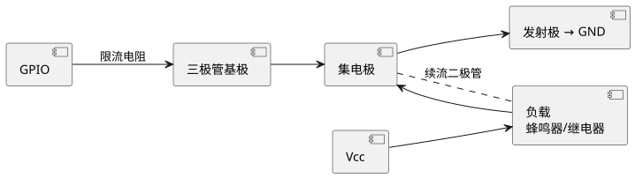
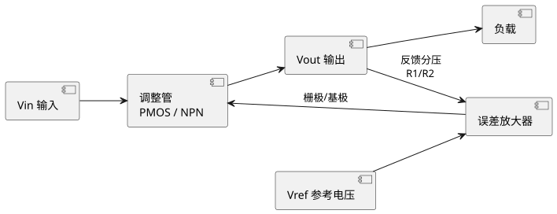
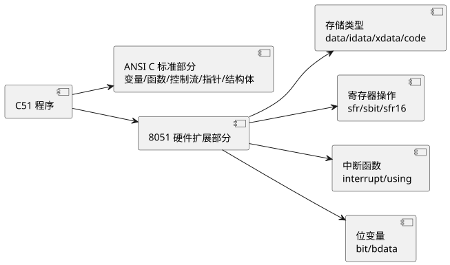

学习目标
- 理解模拟电路中与单片机相关的基础元器件（电阻、电容、二极管、三极管、MOS 管、运放）与典型电路
- 掌握电源电路设计要点，理解 LDO 线性稳压原理、关键参数与选型方法
- 掌握数字电路中与单片机相关的逻辑门、时序元件、时钟与复位电路及电平标准
- 复习 ANSI C 语言核心语法（数据类型、指针、结构体、预处理、位运算），为 C51 程序设计奠定基础
- 了解 C51 与 ANSI C 的关系及 C51 扩展点概貌，建立"前导 → 基础 → STC → STM32"的递进学习路径
1 模拟电路常识
单片机虽然以"数字"为核心，但它的输入输出必须与真实物理世界打交道——传感器输出的是模拟信号，执行机构（电机、蜂鸣器、继电器）需要功率驱动，电源需要稳压滤波。因此，掌握少量必要的模拟电路常识，是单片机硬件设计的基础。
1.1 电阻、电容、电感基础
电阻（Resistor，符号 R）是电路中最基本的元件，主要作用包括：限流（如 LED 限流）、分压（电位器采样）、上拉/下拉（确定总线默认电平）。电阻单位为欧姆（Ω），常用千欧（kΩ）。
直插电阻用色环标识阻值，贴片电阻用数字标识（如 103 = 10×10³ = 10 kΩ，472 = 47×10² = 4.7 kΩ）。单片机电路中常用 1/4 W 直插或 0805/0603 贴片封装。
电容（Capacitor，符号 C）的核心特性是"通交隔直"——对直流相当于开路，对交流呈现容抗 $X_C = \frac{1}{2\pi f C}$。主要用途包括：
| 用途 | 典型场景 | 常用类型与容值 |
|---|---|---|
| 滤波 / 去耦 | 电源引脚旁就近放置，滤除高频纹波 | 0.1 μF 瓷片 + 10 μF 电解 |
| 耦合 | 级间信号传递，隔除直流偏置 | 0.1-1 μF 瓷片 / 电解 |
| 旁路 | 为高频噪声提供低阻抗回路 | 0.01-0.1 μF 瓷片 |
| 定时 | 与电阻组成 RC 定时 / 复位电路 | 10 μF 电解（上电复位） |
| 储能 | 电源储能、平滑输出 | 100-1000 μF 电解 / 钽电容 |
电容选型要点：瓷片电容（MLCC）低 ESR、高频特性好，适合去耦；电解电容容量大但 ESR 高、有极性，适合储能滤波；钽电容性能介于两者之间，但过压易起火。单片机复位电路的 10 μF 电容通常选电解电容。
电感（Inductor，符号 L）在单片机电路中主要用于电源滤波（如 DC-DC 输出滤波）和高频抑制，单位亨利（H），常用微亨（μH）。共模电感用于抑制共模干扰（如 USB 接口前端）。在基础实验中较少直接使用电感，但在电机驱动和开关电源中不可或缺。
1.2 半导体二极管与 LED
二极管具有单向导电性：正向导通时压降约为 0.7 V（硅管），反向截止。在单片机电路中常见以下应用：
- 续流二极管：并联在继电器线圈、电机两端，泄放断电瞬间反电动势，保护驱动管。
- 钳位二极管：将信号电压限制在安全范围，保护 GPIO。
- 稳压二极管：工作在反向击穿区，提供参考电压（如 3.3 V 稳压管）。
LED（发光二极管）是单片机最常用的输出指示元件。LED 正向导通时压降 $V_f$ 因颜色而异：红色约 1.8-2.0 V，绿色约 2.0-2.2 V，蓝色/白色约 2.8-3.2 V。工作电流 $I_f$ 一般取 5-20 mA。
LED 限流电阻的计算公式为：
$$R = \frac{V_{cc} - V_f}{I_f}$$
例如：5 V 供电点亮一颗红色 LED（$V_f = 1.8$ V，$I_f = 10$ mA），则限流电阻 $R = (5 - 1.8) / 0.01 = 320$ Ω，取标称值 330 Ω。
1.3 三极管与场效应管开关驱动
单片机 GPIO 的驱动能力有限（通常几毫安），无法直接驱动蜂鸣器、继电器、电机等大电流负载。此时需要三极管或 MOS 管作为开关驱动。
三极管作开关：以 NPN 型（如 S8050、S9013）为例，当基极电流 $I_B$ 足够大时，三极管进入饱和区，集电极与发射极间近似短路（$V_{CE} \approx 0.3$ V），相当于开关闭合；当 $I_B = 0$ 时三极管截止，集电极与发射极间断开。基极限流电阻计算：
$$R_B = \frac{V_{OH} - V_{BE}}{I_B} = \frac{V_{OH} - 0.7}{I_C / \beta}$$
其中 $V_{OH}$ 为 GPIO 高电平输出电压，$V_{BE} \approx 0.7$ V，$\beta$ 为三极管直流放大倍数（通常取 100），$I_C$ 为负载电流。为可靠饱和，实际 $I_B$ 取计算值的 2-3 倍。
MOS 管作开关：MOS 管是电压驱动器件，栅极几乎不取电流，开关速度快、导通电阻小。NMOS常用作低边开关（负载在上，MOS 在下），PMOS常用作高边开关（负载在下，MOS 在上）。单片机 3.3 V GPIO 通常可直接驱动逻辑电平 MOS 管（如 AO3400、IRFML9014）。

查看 PlantUML 源码
@startuml
skinparam defaultFontName "Microsoft YaHei"
left to right direction
component "GPIO" as A
component "三极管基极" as B
component "集电极" as C
component "Vcc" as D
component "负载\n蜂鸣器/继电器" as E
component "发射极 → GND" as F
A --> B : 限流电阻
B --> C
D --> E
E --> C
C --> F
C .. E : 续流二极管
@enduml1.4 运算放大器基础
运算放大器（Op-Amp，简称运放）是模拟电路的核心器件，在单片机系统中常用于信号调理（放大、滤波、阻抗变换）和比较器。理想运放的两个核心特性是：
- 虚短：同相端与反相端电压相等（$V_+ = V_-$）
- 虚断：流入同相端与反相端的电流为零（输入阻抗无穷大）
常见电路：
| 电路 | 功能 | 增益 / 公式 |
|---|---|---|
| 电压跟随器 | 阻抗变换、缓冲隔离 | $V_{out} = V_{in}$，增益 = 1 |
| 同相放大器 | 放大且不反相 | $A_v = 1 + R_f / R_1$ |
| 反相放大器 | 放大且反相 | $A_v = -R_f / R_1$ |
| 比较器 | 模拟信号 → 数字脉冲 | $V_{in} > V_{ref}$ 则输出高 / 低 |
在单片机 ADC 采样前，常用电压跟随器做阻抗变换（高阻传感器输出 → 低阻 ADC 输入），或用同相放大器将毫伏级信号放大到 0-3.3 V 范围。比较器则可将模拟信号转换为数字脉冲，直接送 GPIO 外部中断捕获。
1.5 滤波电路
RC 低通滤波器是最简单实用的抗混叠滤波器，用于 ADC 采样前滤除高频噪声。截止频率为：
$$f_c = \frac{1}{2\pi R C}$$
例如：$R = 1$ kΩ，$C = 0.1$ μF，则 $f_c = 1 / (2\pi \times 1000 \times 0.1 \times 10^{-6}) \approx 1591$ Hz，可滤除 1.6 kHz 以上的高频干扰。
去耦电容是单片机电路的"标配"：每个 VDD 引脚就近放置一个 0.1 μF 瓷片电容（去高频）+ 一个 10 μF 电解或钽电容（去低频纹波）。缺少去耦电容会导致单片机工作不稳定、复位、通信误码。
1.6 上拉与下拉电阻
当 GPIO 引脚处于高阻态（输入模式且未接外部信号）时，电平不确定，容易受干扰。上拉电阻将引脚默认拉到高电平，下拉电阻将引脚默认拉到低电平，确保总线在空闲时有确定状态。
取值考量：
- 功耗：阻值越小，静态电流越大。4.7 kΩ 上拉在 3.3 V 下耗电约 0.7 mA。
- 速度：阻值越大，与引线寄生电容组成的 RC 时间常数越大，信号上升沿越慢。I2C 总线 100 kHz 常用 4.7 kΩ，400 kHz 常用 2.2 kΩ。
- 线与：OC/OD 门（如 I2C）必须外接上拉电阻才能输出高电平。
STC89C52RC 的准双向口内部有弱上拉，可直接接按键到 GND；STM32 的 GPIO 可配置内部上拉/下拉电阻（约 40 kΩ），也可外接更小的阻值以增强驱动。
2 电源电路常识
稳定的电源是单片机系统可靠运行的前提。本节重点介绍单片机系统中最常用的线性稳压器（LDO），它是将 USB 5 V 或电池电压转换为单片机所需 3.3 V / 5 V 的核心器件。
2.1 单片机系统供电需求
| 平台 | 主电压 | 容差 | 典型供电来源 |
|---|---|---|---|
| STC89C52RC | 5.0 V | ±5% | USB 5V / 7805 / AMS1117-5.0 |
| STM32F407 | 3.3 V | ±4% | AMS1117-3.3 / RT9013 / MP2359 |
| MSP430 | 2.2-3.6 V | 宽范围 | 纽扣电池 / LDO |
除主电源外，还需注意：
- 电压纹波：应小于 50 mV，过大会导致 ADC 采样噪声、复位误触发。
- 多电源域隔离：模拟部分（VDDA）与数字部分（VDD）分开供电或加磁珠隔离，减小数字噪声窜入 ADC。
- 上电时序：多电源系统中应保证电源域上电顺序，避免闩锁效应。
2.2 线性稳压器（LDO）原理
LDO（Low Dropout Regulator，低压差线性稳压器）是一种通过负反馈将输入电压稳定为固定输出电压的器件。其内部结构包含三个核心部分：

查看 PlantUML 源码
@startuml
skinparam defaultFontName "Microsoft YaHei"
left to right direction
component "Vin 输入" as A
component "调整管\nPMOS / NPN" as B
component "Vout 输出" as C
component "误差放大器" as D
component "Vref 参考电压" as E
component "负载" as F
A --> B
B --> C
C --> D : 反馈分压\nR1/R2
D --> B : 栅极/基极
E --> D
C --> F
@enduml工作原理：当输出电压 $V_{out}$ 因负载变化而下降时，反馈分压 $V_{FB}$ 也下降，误差放大器检测到 $V_{FB} < V_{ref}$，驱动调整管导通更深，使 $V_{out}$ 回升；反之亦然。这是一个闭环负反馈系统，输出电压稳定在：
$$V_{out} = V_{ref} \times \left(1 + \frac{R_1}{R_2}\right)$$
LDO 的关键参数：
| 参数 | 含义 | 典型值 | 选型意义 |
|---|---|---|---|
| 压差 Dropout | Vin - Vout 的最小差值 | 50-500 mV | 5V→3.3V 场景压差 1.7V，任意 LDO 都满足；电池供电需低压差 |
| 静态电流 | 空载时 LDO 自身消耗电流 | 1-100 μA | 电池供电场景越小越好 |
| PSRR | 电源纹波抑制比 | 40-70 dB | 值越大，输入纹波对输出影响越小，ADC 供电关键 |
| 输出噪声 | 输出端电压噪声密度 | 10-100 μVrms | 精密模拟电路（ADC 参考）需低噪声 |
| 最大输出电流 | 额定输出能力 | 100-1000 mA | 需大于系统总功耗电流并留余量 |
| 封装热阻 | θJA（结到环境） | 60-200 °C/W | 决定散热能力，功耗大时需选低热阻封装 |
功耗与散热是 LDO 设计必须核算的关键项。LDO 自身功耗为：
$$P_{LDO} = (V_{in} - V_{out}) \times I_{out}$$
例如：AMS1117-3.3 将 5 V 转为 3.3 V，负载电流 500 mA，则 LDO 自身功耗 $P = (5 - 3.3) \times 0.5 = 0.85$ W。SOT-223 封装热阻约 60 °C/W，环境温度 25 °C 时结温 $T_J = 25 + 0.85 \times 60 = 76$ °C，低于 125 °C 上限，可以工作。但若用更小封装（如 SOT-23，热阻约 200 °C/W），则结温 $25 + 0.85 \times 200 = 195$ °C，远超标，会烧毁。
2.3 常用 LDO 芯片与选型
| 型号 | 输出 | 最大电流 | 压差 | 封装 | 典型应用 |
|---|---|---|---|---|---|
| AMS1117-3.3 | 3.3 V 固定 | 1 A | 1.2 V | SOT-223 | 5V → 3.3V，STM32 最常用 |
| AMS1117-5.0 | 5.0 V 固定 | 1 A | 1.2 V | SOT-223 | 9V/12V → 5V，STC 供电 |
| RT9013-3.3 | 3.3 V 固定 | 500 mA | 300 mV | SOT-23-5 | 低压差、小封装，便携设备 |
| ME6211C33 | 3.3 V 固定 | 500 mA | 200 mV | SOT-23-5 | 超低压差、低静态电流 |
| HT7333 | 3.3 V 固定 | 250 mA | 400 mV | TO-92 / SOT-89 | 小电流、直插方便 |
| LM1117-ADJ | 可调 1.25-13.8 V | 1 A | 1.2 V | SOT-223 | 可调输出电压场景 |
选型要点：
- 输入输出电压差 > Dropout 电压 + 余量（建议 0.5 V 以上）。
- 最大输出电流 > 系统总电流 × 1.5（留 50% 余量）。
- 核算功耗 $P = (V_{in} - V_{out}) \times I_{out}$，对照封装热阻验证结温不超过 100 °C。
- 输入输出电容按数据手册推荐选型：通常输入 10 μF + 输出 10 μF 电解，并联 0.1 μF 瓷片去高频。某些 LDO（如 RT9013）要求输出电容 ESR 在特定范围内，选错会导致振荡。
2.4 电源滤波与保护
输入端保护：
- TVS 二极管：并联在电源输入端，吸收浪涌电压（如 USB 热插拔尖峰），钳位电压高于工作电压。
- 自恢复保险丝 PTC：串联在电源输入端，过流时阻值增大限制电流，故障解除后自动恢复。
- 反接保护：串联肖特基二极管（压降 0.3 V）或用 PMOS 做理想二极管，防止电源正负接反烧毁芯片。
输出端滤波：大电解（10-100 μF）平滑低频纹波 + 小瓷片（0.1 μF）去高频噪声，两者并联。每个芯片电源引脚就近放 0.1 μF 去耦电容。
3 数字电路常识
单片机的内部结构（CPU、寄存器、存储器、总线）和工作方式（指令执行、中断响应、时序）完全建立在数字电路基础上。理解数字电路基础是理解单片机内部工作原理的前提。
3.1 数制与编码
单片机内部以二进制（0/1）工作，但人类阅读和编写代码时常用十六进制（0x 前缀）表示。十六进制与二进制转换非常直观：每 4 位二进制对应 1 位十六进制。
| 十进制 | 二进制 | 十六进制 | 寄存器表示 |
|---|---|---|---|
| 15 | 0000 1111 | 0x0F | 0x0F |
| 255 | 1111 1111 | 0xFF | 0xFF |
| 65535 | 1111 1111 1111 1111 | 0xFFFF | 0xFFFF |
BCD 码：用 4 位二进制表示 1 位十进制数（0-9），用于数码管显示。例如十进制数 59 的 BCD 码为 0101 1001 = 0x59。单片机内部做十进制运算时常需在二进制与 BCD 之间转换。
ASCII 码：用 7 位二进制表示一个字符，串口通信的基础。例如 '0' = 0x30，'A' = 0x41，'a' = 0x61。单片机串口发送字符 'A' 实际发送的是字节 0x41。
补码：有符号数在计算机中的表示方法。正数的补码是其本身，负数的补码 = 原码取反 + 1。例如 8 位有符号数 -1 的补码为 0xFF，-128 的补码为 0x80。单片机进行减法、比较大小、有符号数运算时都依赖补码。
3.2 基本逻辑门与布尔代数
基本逻辑门是数字电路的基本构建块。下表列出常用逻辑门的符号、表达式与真值表：
| 逻辑门 | 符号 | 表达式 | 真值表（A,B → Y） |
|---|---|---|---|
| 与 AND | & | Y = A · B | 00→0, 01→0, 10→0, 11→1 |
| 或 OR | ≥1 | Y = A + B | 00→0, 01→1, 10→1, 11→1 |
| 非 NOT | 1 | Y = Ā | 0→1, 1→0 |
| 与非 NAND | & | Y = (A · B)' | 00→1, 01→1, 10→1, 11→0 |
| 或非 NOR | ≥1 | Y = (A + B)' | 00→1, 01→0, 10→0, 11→0 |
| 异或 XOR | =1 | Y = A ⊕ B | 00→0, 01→1, 10→1, 11→0 |
德摩根定律在位运算和寄存器操作中非常实用：
$$\overline{A \cdot B} = \bar{A} + \bar{B}, \quad \overline{A + B} = \bar{A} \cdot \bar{B}$$
例如：要清除寄存器 P1 的第 0 位和第 1 位（清 0），可用 P1 &= ~0x03（与非运算等价于"清零特定位"）。这将在 0.4 节 C 语言位运算中详述。
3.3 组合逻辑电路
组合逻辑电路的输出仅取决于当前输入，无记忆功能。单片机系统中常见的组合逻辑器件：
- 3-8 译码器 74HC138：3 位地址输入，8 路输出中只有 1 路有效（低电平），常用于地址译码、外设片选。
- 数据选择器 74HC153：多路输入选 1 路输出，常用于 ADC 多通道切换模拟前端。
- 三态门：输出有高电平、低电平、高阻态三种状态。高阻态相当于断开，使多个器件可共享总线。单片机 GPIO 的输入模式即高阻态。
- OC/OD 门：集电极开路 / 漏极开路，无法输出高电平，必须外接上拉电阻。多个 OC/OD 输出可接到同一根线，实现线与（任意一个为低则总线为低）。I2C 总线即基于 OD 门线与，这是理解 I2C 协议的硬件基础。
3.4 时序逻辑电路
时序逻辑电路有记忆功能，输出取决于当前输入和历史状态。触发器是最基本单元：
| 触发器 | 功能 | 单片机中的应用 |
|---|---|---|
| D 触发器 | 时钟上升沿锁存 D 端数据到 Q | 寄存器、GPIO 输出锁存 |
| RS 触发器 | 置位 / 复位 | 按键消抖、SRAM 单元 |
| JK 触发器 | 通用触发器，可计数、分频 | 计数器、分频器 |
移位寄存器 74HC595：串行输入、并行输出，通过 3 根线（数据、时钟、锁存）控制 8 路输出，可级联扩展。是单片机扩展 IO 口的经典器件（第 11 章详述）。
计数器：对时钟脉冲计数，可实现分频、定时。单片机内部的定时器/计数器外设本质上就是一个可预置的计数器（第 9 章详述）。
3.5 时钟与复位电路
时钟电路是单片机的心跳。STC89C52RC 使用外部无源晶振 + 两个负载电容组成皮尔斯振荡器：
- 晶振频率：常用 11.0592 MHz（便于串口波特率整除）或 12 MHz（便于定时器整时）。
- 负载电容：通常取 20-30 pF，两个电容另一端接地。
- 周期与频率关系：$T = 1/f$。12 MHz 晶振周期 = 83.3 ns，机器周期 = 12T = 1 μs。
STM32F407 可使用外部 8 MHz 高速晶振（HSE）经内部 PLL 倍频到 168 MHz，也可使用内部 16 MHz RC 振荡器（HSI，精度较差）。
复位电路确保单片机上电时从确定状态启动：
- 上电复位（POR）：RC 电路，上电瞬间电容未充电，RST 引脚为高，随电容充电 RST 下降到低，完成复位。常用 10 μF 电容 + 10 kΩ 电阻。
- 按键复位：并联一个按键到 Vcc，按下时 RST 为高，手动复位。
- 看门狗复位：程序跑飞时看门狗定时器溢出，自动产生复位，系统恢复。
复位有效电平：STC89C52RC 高电平复位（RST = 1 持续 24 个机器周期以上），STM32 低电平复位（NRST = 0）。
3.6 电平标准与电平转换
不同芯片系列使用不同电平标准，互联时必须注意兼容性：
| 标准 | Vcc | VIH（高电平输入） | VIL（低电平输入） | VOH / VOL |
|---|---|---|---|---|
| TTL | 5 V | ≥ 2.0 V | ≤ 0.8 V | ≥ 2.4 V / ≤ 0.4 V |
| CMOS 5V | 5 V | ≥ 3.5 V | ≤ 1.5 V | ≥ 4.4 V / ≤ 0.5 V |
| CMOS 3.3V | 3.3 V | ≥ 2.0 V | ≤ 0.8 V | ≥ 2.4 V / ≤ 0.4 V |
5V 系统与 3.3V 系统互联：
- 3.3V 单片机（STM32）→ 5V 器件输入：STM32 输出高电平 3.3 V，多数 5V TTL 器件的 VIH = 2.0 V，可直接驱动。
- 5V 器件输出 → 3.3V 单片机输入：5V 高电平 4.4 V 超过 STM32 的最大耐受电压（VDD + 0.3 V = 3.6 V），必须电平转换，否则会损坏 GPIO。
常用电平转换方案：
- 电阻分压：5V → 3.3V 用 1 kΩ + 2 kΩ 分压，简单但只能单向、速度慢。
- 专用电平转换芯片：TXS0108 / 74LVC245 / 74LVC1T45，支持双向、高速，推荐用于 SPI / I2C 等总线。
- MOS 管电平转换：用一颗 NMOS + 上拉电阻实现双向 I2C 电平转换，成本低。
4 ANSI C 语言基础（C51 先修）
单片机程序绝大多数用 C 语言编写。ANSI C（标准 C）是所有 C 语言变体（包括 C51）的基础。本节复习 C 语言核心语法，重点关注与单片机编程紧密相关的部分（位运算、指针、结构体、预处理）。
4.1 数据类型与运算符
C 语言基本数据类型及其在 PC 上的字节数和取值范围：
| 类型 | 关键字 | 字节数 | 取值范围 |
|---|---|---|---|
| 字符 | char | 1 | -128 ~ 127（或 0~255） |
| 无符号字符 | unsigned char | 1 | 0 ~ 255 |
| 整型 | int | 2 或 4 | 取决于平台 |
| 无符号整型 | unsigned int | 2 或 4 | 取决于平台 |
| 长整型 | long | 4 | -2³¹ ~ 2³¹-1 |
| 单精度浮点 | float | 4 | ±3.4E±38（6-7 位有效数字） |
| 双精度浮点 | double | 8 | ±1.7E±308（15-16 位有效数字） |
int 默认是 16 位（2 字节），与 PC 上的 32 位 int 不同。这是跨平台移植代码时的常见陷阱。详见第 6 章。
位运算是单片机编程最常用的运算，直接操作寄存器的每一位：
| 运算符 | 名称 | 示例 | 用途 |
|---|---|---|---|
| & | 按位与 | P1 & 0x0F | 取低 4 位 / 清零特定位 |
| | | 按位或 | P1 | 0x01 | 置位第 0 位 |
| ~ | 按位取反 | ~0x0F | 生成掩码 0xF0 |
| ^ | 按位异或 | P1 ^ 0x01 | 翻转第 0 位 |
| << | 左移 | 1 << 3 | 生成第 3 位的掩码 = 0x08 |
| >> | 右移 | P1 >> 4 | 取高 4 位到低 4 位 |
寄存器操作的标准范式（务必牢记）：
// 置位第 n 位（设为 1）
REG |= (1 << n);
// 清零第 n 位（设为 0）
REG &= ~(1 << n);
// 翻转第 n 位
REG ^= (1 << n);
// 读取第 n 位
bit = (REG >> n) & 1;
// 设置第 n 位为某值 val（0 或 1）
REG = (REG & ~(1 << n)) | (val << n);4.2 控制流
C 语言的控制流与多数高级语言相似，简要复习：
// if-else 分支
if (temperature > 30) {
fan_on();
} else if (temperature > 20) {
fan_low();
} else {
fan_off();
}
// switch-case 状态机
switch (state) {
case STATE_IDLE: do_idle(); break;
case STATE_RUNNING: do_run(); break;
case STATE_ERROR: do_error(); break;
default: state = STATE_IDLE;
}
// for 循环（延时）
for (volatile int i = 0; i < 1000; i++) {
// 空循环延时（不精确，仅演示）
}
// while 循环（等待事件）
while (!(USART1->SR & USART_SR_RXNE)) {
// 等待接收完成
}volatile 关键字在单片机编程中非常重要：它告诉编译器该变量可能被硬件 / 中断修改，不要优化掉对它的读写。所有映射到硬件寄存器的变量和中断中修改的全局变量都应加 volatile。
4.3 函数与变量作用域
// 函数声明（原型）
void delay_ms(unsigned int ms);
// 函数定义
void delay_ms(unsigned int ms) {
while (ms--) {
for (volatile int i = 0; i < 120; i++);
}
}
// 全局变量：整个文件可见，可用 extern 在其他文件引用
int system_tick = 0;
// static 局部变量：函数退出后保留值，但仅函数内可见
int counter(void) {
static int count = 0;
return ++count;
}
// static 全局变量：仅当前文件可见（限制作用域）
static int internal_state = 0;4.4 数组与字符串
// 一维数组：数码管段码表
const unsigned char seg_table[] = {
0x3F, 0x06, 0x5B, 0x4F, 0x66, // 0-4
0x6D, 0x7D, 0x07, 0x7F, 0x6F // 5-9
};
// 二维数组：LED 点阵字模
const unsigned char font[2][8] = {
{0x00, 0x1C, 0x22, 0x22, 0x22, 0x22, 0x1C, 0x00}, // 'O'
{0x00, 0x1C, 0x22, 0x22, 0x22, 0x22, 0x1C, 0x00} // 'K'
};
// 字符串：以 '\0' 结尾
char msg[] = "Hello";
// sizeof(msg) = 6（含 '\0'），strlen(msg) = 5
// 字符串常用函数（需 #include <string.h>）
char buf[32];
sprintf(buf, "Temp=%d C", 25); // 格式化字符串4.5 指针
指针是 C 语言的灵魂，也是单片机操作硬件寄存器的基础。指针 = 地址，通过指针可以间接访问内存。
int a = 10;
int *p = &a; // p 存储 a 的地址
*p = 20; // 通过指针修改 a 的值为 20
// 指针与数组
int arr[5] = {1, 2, 3, 4, 5};
int *q = arr; // 数组名就是首元素地址
// q[2] == *(q+2) == arr[2] == 3
// 指针作为函数参数（传址调用，可修改实参）
void swap(int *x, int *y) {
int t = *x;
*x = *y;
*y = t;
}
swap(&a, &b);
// 直接访问硬件寄存器地址（STM32 常用）
// 将 0x40021000 解释为指向 unsigned int 的指针并解引用
volatile unsigned int *reg = (unsigned int *)0x40021000;
*reg |= (1 << 5); // 置位第 5 位函数指针：指向函数的指针，用于回调、状态机表驱动：
// 定义函数指针类型
typedef void (*handler_t)(void);
// 函数
void handle_idle(void) { /* ... */ }
void handle_run(void) { /* ... */ }
void handle_error(void) { /* ... */ }
// 函数指针数组（状态机表驱动）
handler_t handlers[] = {
handle_idle,
handle_run,
handle_error
};
// 调用
int state = 1;
handlers[state](); // 调用 handle_run()4.6 结构体、联合与枚举
结构体（struct）将相关数据组织在一起，是单片机程序组织配置参数、通信协议帧的利器：
// 串口配置参数
typedef struct {
unsigned int baudrate;
unsigned char data_bits;
unsigned char parity;
unsigned char stop_bits;
} uart_config_t;
uart_config_t cfg = {115200, 8, 0, 1};
// cfg.baudrate == 115200联合（union）让不同类型共享同一段内存，是寄存器位 / 字节访问的经典技巧：
// 16 位寄存器：可按字访问，也可按字节访问
typedef union {
unsigned int word; // 16 位整体访问
struct {
unsigned char low; // 低字节
unsigned char high; // 高字节
} byte;
} reg16_t;
reg16_t r;
r.word = 0xABCD;
// r.byte.low == 0xCD, r.byte.high == 0xAB枚举（enum）定义具名常量，使状态机代码更可读：
typedef enum {
STATE_IDLE = 0,
STATE_RUNNING,
STATE_PAUSED,
STATE_ERROR
} system_state_t;
system_state_t state = STATE_RUNNING;
if (state == STATE_ERROR) {
// 错误处理
}typedef：为类型起别名，提升可读性与可移植性：
typedef unsigned char uint8_t; // 8 位无符号
typedef unsigned int uint16_t; // 16 位无符号
typedef unsigned long uint32_t; // 32 位无符号4.7 预处理与模块化编程
预处理指令在编译前处理，是 C 语言模块化编程的基础：
// led.h 头文件
#ifndef __LED_H__ // 防止重复包含
#define __LED_H__
#define LED_PIN 5 // 宏常量
#define LED_ON(port) (port &= ~(1 << LED_PIN)) // 带参宏
void led_init(void); // 函数声明
void led_toggle(void);
#endif // __LED_H__
// led.c 源文件
#include "led.h"
void led_init(void) {
P1 |= (1 << LED_PIN); // 初始化
}
void led_toggle(void) {
P1 ^= (1 << LED_PIN); // 翻转
}
// 条件编译：调试版本打印日志，发布版本不打印
#ifdef DEBUG
#define LOG(msg) printf(msg)
#else
#define LOG(msg)
#endif头文件与源文件分离是工程化编程的基本规范：.h 文件放声明（接口），.c 文件放定义（实现）。这为第 6 章学习 C51 模块化编程打下基础。
4.8 volatile 关键字详解
volatile（易变的）是 C 语言中容易被忽视但在单片机编程中至关重要的关键字。它告诉编译器："这个变量的值可能在你看不到的地方被改变，每次访问都必须从内存重新读取，不要优化到寄存器里。"
三种必须使用 volatile 的场景：
1）硬件寄存器映射：外设寄存器的值可能被硬件改变（如串口的接收数据寄存器在收到新字节时自动更新），若编译器将寄存器值缓存到 CPU 寄存器，后续读取将得到旧值。
// 错误：可能被优化为只读一次，导致死循环
unsigned int *p = (unsigned int *)0x40011004;
while ((*p & 0x0080) == 0) { // 等待 TXE 标志位置 1
// 编译器可能认为 *p 不会变，直接优化成 while(1)
}
// 正确：加 volatile 强制每次从内存读取
volatile unsigned int *p = (volatile unsigned int *)0x40011004;
while ((*p & 0x0080) == 0) { // 每次循环都重新读寄存器
// 正确等待硬件置位
}2）中断与主循环共享变量：中断函数修改的变量，若主循环未加 volatile，编译器可能将主循环中的读取优化掉。
// 错误：flag 可能被优化，主循环读不到中断里的修改
int flag = 0;
void EXTI0_IRQHandler(void) { // 中断服务函数
flag = 1;
}
int main(void) {
while (flag == 0) { // 编译器可能认为 flag 不会变，优化为 while(1)
// 死等，永远等不到中断
}
}
// 正确：共享变量加 volatile
volatile int flag = 0;
void EXTI0_IRQHandler(void) {
flag = 1;
}
int main(void) {
while (flag == 0) { // 每次都重新读取
}
// 中断触发后正常跳出
}3）多线程 / RTOS 共享变量：FreeRTOS 任务间共享的标志位、队列索引等同样需要 volatile（或使用 RTOS 提供的同步原语）。
volatile 只保证"每次都从内存读取"，不保证原子性。对于 32 位变量在 8 位 MCU 上的读 / 写操作，仍可能被中断打断导致数据撕裂，此时需要关中断或使用原子操作。STM32 的 __disable_irq() / __enable_irq() 可保护临界区。
const 与 volatile 可以同时使用：例如 const volatile unsigned int *p 表示"指针本身不能改（const），但所指内容可能被硬件改（volatile）"——典型的只读硬件状态寄存器映射。
4.9 跨文件变量与函数的使用方案
实际工程不会把所有代码塞在一个 .c 文件里。多文件工程中，"变量和函数如何跨文件共享"是初学者最容易卡住的地方。核心工具是 extern、static 和规范的头文件。
跨文件共享变量：在 一个.c 文件中定义，在其他文件中用 extern 声明：
// === config.c === （定义处，分配内存）
unsigned int system_tick = 0; // 全局变量定义
unsigned char device_addr = 0x50; // 另一个全局变量
// === config.h === （声明处，告诉其他文件"这些变量存在"）
#ifndef __CONFIG_H__
#define __CONFIG_H__
extern unsigned int system_tick; // extern 表示"变量在别处定义"
extern unsigned char device_addr;
#endif
// === main.c === （使用方，包含头文件即可访问）
#include "config.h"
void main(void) {
system_tick = 100; // 正确：能访问到 config.c 中的变量
device_addr = 0x60;
}常见错误：
- 在 .h 中写定义而非声明：
unsigned int system_tick = 0;写在 .h 里，被多个 .c 包含后会导致链接错误"multiple definition"。.h 中必须用extern声明，定义只能放 .c。 - 忘记
extern：在 .c 中写unsigned int system_tick;（无 extern）会被当作"定义"，若 main.c 也这么做，会重复定义。 - 头文件没加防卫式包含：缺少
#ifndef __CONFIG_H__会导致重复包含、重复声明报错。
跨文件共享函数：函数默认是 extern 的（可被其他文件调用），无需写 extern 关键字，只要在头文件中放函数原型声明即可：
// === uart.c === （函数定义）
void uart_init(unsigned int baud) {
// 实现
}
void uart_send(unsigned char byte) {
// 实现
}
// === uart.h === （函数声明，供其他文件调用）
#ifndef __UART_H__
#define __UART_H__
void uart_init(unsigned int baud);
void uart_send(unsigned char byte);
#endif
// === main.c ===
#include "uart.h"
void main(void) {
uart_init(115200);
uart_send('A');
}限制作用域用 static：希望某个全局变量或函数只在本文件内可见（不被其他文件访问），用 static 修饰：
// === uart.c ===
static unsigned char tx_buf[64]; // 仅 uart.c 可见，其他文件即使 extern 也访问不到
static void delay_short(void) { // 仅 uart.c 内部可调用
for (volatile int i = 0; i < 10; i++);
}
void uart_send(unsigned char byte) {
tx_buf[0] = byte; // 可访问本文件的 static 变量
delay_short(); // 可调用本文件的 static 函数
}static 的两种用途（注意区分）：
| 位置 | 作用 | 典型场景 |
|---|---|---|
| 全局变量前 | 限制作用域到本文件 | 模块内部状态、内部缓冲区 |
| 函数前 | 限制函数可见性到本文件 | 模块内部辅助函数 |
| 局部变量前 | 改变存储位置（存于静态区），函数退出后值保留 | 计数器、状态机记忆 |
4.10 第三方开源库的集成与使用
实际项目经常会用到第三方开源库（如 JSON 解析库 cJSON、UART 缓冲库、CRC 计算库、传感器驱动等）。初学者常常"源码下载下来了，但不知道怎么编进工程里"。本节以 cJSON 为例，讲解通用流程。
第一步：获取源码。从 GitHub 下载（git clone 或下载 ZIP）：
# 方法 1：git clone（推荐，便于后续更新）
git clone https://github.com/DaveGamble/cJSON.git
# 方法 2：直接下载 ZIP 解压
# 访问 https://github.com/DaveGamble/cJSON → Code → Download ZIP第二步：挑选必要文件。一个库通常包含很多文件（示例、测试、文档），但核心源文件往往只有一两个。以 cJSON 为例：
| 文件 | 用途 | 是否需要 |
|---|---|---|
| cJSON.c | 核心实现 | 必需 |
| cJSON.h | 接口声明 | 必需 |
| cJSON_Utils.c/h | JSON Pointer / Patch 扩展 | 按需 |
| test.c / fuzzing/ | 测试代码 | 不需要 |
| README.md / CHANGELOG | 文档 | 参考 |
第三步：放入工程目录。推荐建立统一目录结构：
project/
├── Core/
│ ├── Src/main.c
│ └── Inc/main.h
├── Drivers/ ← 厂商 HAL 库
└── ThirdParty/ ← 第三方库统一放这里
└── cJSON/
├── cJSON.c
└── cJSON.h第四步：配置编译器。需要让编译器找到头文件（添加 include 路径）和编译源文件：
- Keil MDK：Project → Manage → Project Items → Add Files 把 cJSON.c 加入 Group；Options for Target → C/C++ → Include Paths 添加
../ThirdParty/cJSON。 - STM32CubeIDE：右键项目 → Properties → C/C++ Build → Settings → MCU GCC Compiler → Include paths 添加目录；右键文件夹 → Add/Remove from Build Path。
- PlatformIO：把库放到
lib/cJSON/目录，PlatformIO 会自动编译；或在platformio.ini中用lib_deps直接从库管理器安装。 - Keil C51：同样通过 Project → Add Files 把 .c 加入工程，Options → C51 → Include Paths 添加头文件路径。
第五步：包含头文件并使用：
#include "cJSON.h" // 双引号表示先在工程目录找，再到系统目录找
#include <stdio.h> // 尖括号表示只在系统目录找
void main(void) {
// 解析 JSON 字符串
const char *json_str = "{\"name\":\"STC\",\"version\":2}";
cJSON *root = cJSON_Parse(json_str);
if (root == NULL) {
// 解析失败
return;
}
cJSON *name = cJSON_GetObjectItem(root, "name");
if (cJSON_IsString(name)) {
printf("name = %s\n", name->valuestring);
}
cJSON_Delete(root); // 释放内存（嵌入式需谨慎使用 malloc）
}注意 #include "..." 与 #include <...> 的区别：
"xxx.h"（双引号）：先在当前源文件所在目录找，找不到再到编译器指定的 include 路径找。用于工程内自定义头文件。<xxx.h>（尖括号）：只在编译器指定的系统目录找。用于标准库和编译器自带头文件。
嵌入式使用第三方库的注意事项：
- 内存占用：cJSON 默认使用
malloc/free，在 STC89C52RC（512 B RAM）上几乎不可用；在 STM32F407（192 KB RAM）上可用但需配置堆大小（Heap_Size）。 - 静态分配版本：很多库提供"无 malloc"版本或可配置分配器，适合资源受限场景。cJSON 可用
cJSON_InitHooks自定义内存分配函数。 - 裁剪：通过宏关闭不需要的功能（如 cJSON 可用
-DENABLE_CJSON_UTILS=OFF关闭扩展模块）。 - 可重入性：确保库函数可被中断安全调用，或在中断中禁止调用。
4.11 通过绝对地址访问内存与寄存器
用户提到"绝对地址怎么用"——这是单片机编程中访问固定内存地址的技术，常用于操作硬件寄存器（寄存器被映射到固定内存地址）或访问特定 RAM 区域。本节系统讲解。
原理：在 ARM Cortex-M 系列（如 STM32）中，外设寄存器被映射到固定的内存地址（如 GPIOA 的 ODR 寄存器在 0x40020014）。要操作这些寄存器，必须把整数地址转换为指针并解引用。
方法 1：直接强制类型转换（最基础，理解原理）：
// 把整数 0x40020014 转换为"指向 unsigned int 的指针"，再解引用
// 等价于直接写 GPIOA->ODR = 0x0001
*(volatile unsigned int *)0x40020014 = 0x0001; // 写寄存器：PA0 输出高
// 读取寄存器值
unsigned int val = *(volatile unsigned int *)0x40020014;拆解这一行代码：
0x40020014：整数地址（无符号整型）(unsigned int *)0x40020014：将整数转换为"指向 unsigned int 的指针"类型(volatile unsigned int *)0x40020014：加 volatile，防止编译器优化掉访问*(...)：解引用，访问该地址的内容
方法 2：用宏封装（可读性更好，推荐）：
// 定义寄存器宏
#define GPIOA_ODR (*(volatile unsigned int *)0x40020014)
// 使用
GPIOA_ODR = 0x0001; // 写
unsigned int val = GPIOA_ODR; // 读方法 3：用结构体映射一片连续寄存器（CMSIS 标准做法）：
// 定义 GPIO 寄存器结构体
typedef struct {
volatile unsigned int MODER; // 0x00
volatile unsigned int OTYPER; // 0x04
volatile unsigned int OSPEEDR; // 0x08
volatile unsigned int PUPDR; // 0x0C
volatile unsigned int IDR; // 0x10
volatile unsigned int ODR; // 0x14
// ... 其他寄存器
} GPIO_TypeDef;
// 把基地址强制转换为结构体指针
#define GPIOA ((GPIO_TypeDef *)0x40020000)
// 使用：结构体成员自动按偏移量访问对应寄存器
GPIOA->MODER = 0x00000000; // 访问 0x40020000
GPIOA->ODR = 0x0001; // 访问 0x40020014（结构体偏移 0x14）
unsigned int val = GPIOA->IDR; // 访问 0x40020010STM32 的 HAL 库、CMSIS 设备头文件就是用方法 3 把所有外设寄存器封装成结构体指针，开发者只需写 GPIOA->ODR = 0x01，底层自动映射到绝对地址。
方法 4：8051 / STC 平台的特殊功能寄存器。8051 不用指针访问 SFR，而是用 C51 扩展关键字 sfr / sbit（详见第 6 章）：
// C51 写法（与 ARM 不同）
sfr P1 = 0x90; // 定义 P1 端口寄存器，地址 0x90
sbit LED = P1^0; // 定义 P1.0 位
P1 = 0xFF; // 整字节写
LED = 1; // 位写sfr/sbit 关键字直接绑定地址，语法简洁但只能用于 SFR 区；STM32（Cortex-M）用指针 + 强制类型转换访问任意内存地址，灵活但需注意 volatile 和缓存问题。
绝对地址访问 RAM：有时需要访问特定 RAM 地址（如启动文件保留的备用寄存器区、链接脚本指定的特殊区域）：
// 访问 STM32 备份寄存器（RTC 域，地址 0x40002800+）
#define RTC_BKP0 (*(volatile unsigned int *)0x40002800)
RTC_BKP0 = 0x12345678; // 写入备份寄存器（掉电后由 VBAT 维持）4.12 单片机 C 编程常见陷阱与最佳实践
本节整理初学者最容易踩坑的若干问题，每条都附正确写法。
1）整数溢出与隐式类型转换：
// 错误：两个 unsigned char 相加可能溢出
unsigned char a = 200, b = 100;
unsigned int sum = a + b; // 期望 300，但 a+b 在 int 为 8 位的平台上溢出
// 正确：显式转换
unsigned int sum = (unsigned int)a + (unsigned int)b;
// 陷阱：1 << 31 在 32 位 int 下是 UB（未定义行为），需用 U 后缀
unsigned int mask = 1U << 31; // 加 U 表示 unsigned2）有符号数与无符号数比较：
int a = -1;
unsigned int b = 1;
if (a < b) { ... } // 错误：a 被隐式转为无符号，变成 0xFFFFFFFF，远大于 1
// 正确：显式转换或都使用同类型
if ((unsigned int)a < b) { ... } // 仍可能错
if (a < (int)b) { ... } // 推荐3）宏定义副作用：
// 错误：宏参数被求值两次
#define MAX(a, b) ((a) > (b) ? (a) : (b))
int x = MAX(i++, j++); // i 或 j 可能自增两次！
// 正确：用内联函数（C99+）或写明副作用
static inline int max(int a, int b) { return a > b ? a : b; }
int x = max(i++, j++); // 安全，每个参数只求值一次4）指针未初始化与野指针：
// 错误：未初始化的指针指向随机地址
int *p;
*p = 10; // 可能崩溃
// 正确：初始化为 NULL 或有效地址
int *p = NULL;
int a = 0;
p = &a;
*p = 10;
// 错误：返回局部变量地址
int *get_value(void) {
int local = 42;
return &local; // 函数返回后 local 已销毁，指针悬挂
}
// 正确：用 static 或动态分配
int *get_value(void) {
static int local = 42; // static 变量生命周期为整个程序
return &local;
}5）缓冲区溢出：
// 错误：sprintf 不检查目标缓冲区大小
char buf[8];
sprintf(buf, "Temp=%d C, Hum=%d%%", 25, 60); // 字符串长度可能超过 8
// 正确：用 snprintf 限制长度
snprintf(buf, sizeof(buf), "Temp=%d", 25); // 最多写 7 个字符 + '\0'6）switch 漏 break：
// 错误：漏 break 导致 fall-through（穿透执行下一个 case）
switch (state) {
case 0: do_a();
case 1: do_b(); // state==0 时也会执行 do_b()！
case 2: do_c();
}
// 正确：每个 case 后加 break（除非有意穿透）
switch (state) {
case 0: do_a(); break;
case 1: do_b(); break;
case 2: do_c(); break;
default: break;
}7）sizeof 与数组退化：
int arr[10] = {0};
printf("%d\n", sizeof(arr)); // 40（10 × 4 字节）
void func(int arr[]) {
printf("%d\n", sizeof(arr)); // 4 或 8（指针大小！数组退化为指针）
}
// 正确：数组长度作为参数传递
void func(int *arr, int len) {
for (int i = 0; i < len; i++) { ... }
}
// 调用方：func(arr, sizeof(arr) / sizeof(arr[0]));8）注释嵌套与中文标点：C 语言不支持 /* /* */ 嵌套，外层 /* 会与第一个 */ 匹配，导致后续代码意外被注释或语法错误。另外，代码中的标点（逗号、分号、括号）必须是英文半角，中文标点（，；（））会导致编译错误，且不易察觉。
- 每个源文件开头写注释：文件名、作者、日期、功能简述。
- 函数前写注释：参数含义、返回值、副作用。
- 变量名用有意义的英文（如
temperature而非t），循环变量可用i, j, k。 - 开启编译器警告（
-Wall -Wextra），所有警告都应认真对待。 - 使用版本控制（Git），每完成一个功能就 commit，便于回退。
5 C51 概览（衔接第 6 章）
本节简要介绍 C51 是什么、与 ANSI C 的关系以及扩展点概貌，深入细节（sfr/sbit 语法、存储类型、中断函数写法）将在第 6 章详述。本节目的在于让你在进入第 4 章 MCS-51 体系结构之前，对"C 语言如何与单片机硬件结合"有一个整体印象。
5.1 什么是 C51
C51是 Keil 公司为 8051 系列单片机设计的 C 语言编译器。它允许开发者用 C 语言而非汇编语言编写 8051 程序，极大提升了开发效率、代码可读性和可移植性。STC89C52RC 基于 8051 内核，因此使用 C51 编程。
使用 C 语言而非汇编的优势：
- 开发效率：一行 C 代码可能对应多行汇编，编写和阅读更高效。
- 可读性：变量名、函数名、注释使代码自解释。
- 可移植性：C 代码可跨 8051 变种（STC、AT89C51、AT89S52 等）移植，汇编则不行。
- 可维护性：模块化、结构化编程使大型项目管理成为可能。
5.2 C51 与 ANSI C 的关系
C51 是 ANSI C 的超集（严格说是子集 + 扩展），可分解为两部分：

查看 PlantUML 源码
@startuml
skinparam defaultFontName "Microsoft YaHei"
left to right direction
component "C51 程序" as A
component "ANSI C 标准部分\n变量/函数/控制流/指针/结构体" as B
component "8051 硬件扩展部分" as C
component "存储类型\ndata/idata/xdata/code" as D
component "寄存器操作\nsfr/sbit/sfr16" as E
component "中断函数\ninterrupt/using" as F
component "位变量\nbit/bdata" as G
A --> B
A --> C
C --> D
C --> E
C --> F
C --> G
@enduml本节 0.4 复习的 ANSI C 语法在 C51 中完全适用——if、for、while、switch、函数、指针、结构体的用法与 PC 上编程一致。差异仅在于"扩展部分"：C51 为了描述 8051 硬件特性（哈佛结构存储器、特殊功能寄存器、位寻址区、中断系统），新增了少量关键字。
5.3 C51 扩展点一览
下表列出 C51 相对于 ANSI C 的主要扩展，每项对应 8051 的一个硬件特性。详细语法和用法请见第 6 章。
| 扩展点 | 关键字 | 对应的 8051 硬件特性 | 详见 |
|---|---|---|---|
| 存储类型 | data / idata / xdata / pdata / code | 哈佛结构：内部 RAM / 外部 RAM / ROM | 第 6 章 §6.2 |
| 寄存器操作 | sfr / sfr16 / sbit | 特殊功能寄存器 SFR 与位寻址 | 第 6 章 §6.3 |
| 中断函数 | interrupt / using | 5 个中断源、中断向量、中断号映射 | 第 6 章 §6.5 |
| 位变量 | bit / bdata | 位寻址区（20H-2FH） | 第 6 章 §6.4 |
| 指针扩展 | 通用指针 / 存储区指针 | 区分指针指向的存储区域 | 第 6 章 §6.6 |
| 重入函数 | reentrant | 8051 默认不可重入，需特殊声明 | 第 6 章 §6.7 |
5.4 从 ANSI C 到 C51 的学习路径
建议按以下路径从 ANSI C 过渡到 C51：
- 复习 ANSI C 基础（本章 0.4 节）：确保理解指针、结构体、位运算、预处理。
- 理解 8051 体系结构（第 4 章）：学习 8051 的存储器结构、SFR、I/O 端口、中断系统，理解"为什么 C51 需要扩展"。
- 搭建开发环境（第 5 章）：安装 Keil C51 或 PlatformIO，创建第一个工程。
- 学习 C51 扩展语法（第 6 章）：逐个掌握存储类型、sfr/sbit、中断函数。
- 实战（第 7 章起）：点亮 LED、按键输入、数码管显示……在实战中巩固。
这个递进路径的核心思路是：先理解硬件结构，再学习描述硬件的语言扩展。C51 的每个扩展关键字都对应一个 8051 硬件特性，理解了硬件，C51 语法就成了水到渠成的事。
本章小结
- 模拟电路：电阻限流分压、电容滤波去耦、二极管续流钳位、三极管 / MOS 管开关驱动、运放信号调理、RC 滤波截止频率 $f_c = 1/(2\pi RC)$、上拉下拉电阻确定默认电平。
- 电源电路：LDO 通过闭环负反馈稳压，输出 $V_{out} = V_{ref}(1 + R_1/R_2)$，自身功耗 $P = (V_{in} - V_{out}) \times I_{out}$，需核算散热。常用 AMS1117-3.3 / 5.0。输入端加 TVS / PTC / 反接保护，输出端加大电解 + 小瓷片滤波。
- 数字电路：二进制 / 十六进制 / BCD / ASCII / 补码编码；与 / 或 / 非 / 异或逻辑门；译码器 74HC138、移位寄存器 74HC595、计数器；时钟电路（晶振 + 负载电容）、复位电路（上电 / 按键 / 看门狗）；TTL / CMOS 电平标准与 5V/3.3V 互联的电平转换。
- ANSI C：数据类型与位运算（寄存器置位 / 清零 / 翻转范式）、控制流、函数与作用域、数组与字符串、指针（含直接访问硬件寄存器地址）、结构体 / 联合 / 枚举（寄存器位 / 字节双重视图）、预处理与模块化编程（.h/.c 分离）。
- volatile 关键字：三种必用场景——硬件寄存器映射、中断与主循环共享变量、RTOS 任务间共享变量。volatile 只保证每次从内存读取，不保证原子性（32 位变量在 8 位 MCU 上需关中断保护）。const + volatile 组合用于只读硬件状态寄存器。
- 跨文件工程：变量在 .c 中定义、.h 中用 extern 声明；函数在 .c 中定义、.h 中放原型声明；static 限制作用域到本文件（信息隐藏）；头文件必须加防卫式包含（#ifndef）；所有跨文件共享通过头文件暴露、内部数据用 static 封装。
- 第三方开源库集成：获取源码 → 挑选核心 .c/.h 文件 → 放入 ThirdParty/ 目录 → 配置编译器 include 路径与编译文件 →
#include "xxx.h"（双引号，工程内头文件）vs#include <xxx.h>（尖括号，系统头文件）。嵌入式需注意 malloc 可用性、内存占用与可重入性。 - 绝对地址访问：Cortex-M 用
*(volatile unsigned int *)地址访问寄存器，可封装为宏或用结构体映射一片连续寄存器（CMSIS 做法）；8051 用 C51 扩展关键字 sfr/sbit 直接绑定地址（详见第 6 章）。 - 常见陷阱：整数溢出、有符号与无符号比较、宏参数副作用、野指针、缓冲区溢出（用 snprintf）、switch 漏 break、数组退化为指针（sizeof 在函数内失效）、注释嵌套与中文标点。
- C51 概览：C51 = ANSI C + 8051 硬件扩展；扩展点包括存储类型、sfr/sbit、中断函数、位变量；学习路径为"复习 ANSI C → 理解 8051 结构 → 学习 C51 扩展 → 实战点亮 LED"。
思考题与习题
- 用 5 V 供电点亮一颗蓝色 LED（$V_f = 3.0$ V，$I_f = 10$ mA），计算限流电阻值。若改用 3.3 V 供电，结果如何？
- AMS1117-3.3 将 5 V 转为 3.3 V，负载电流 300 mA，环境温度 30 °C，SOT-223 封装热阻 60 °C/W。计算 LDO 自身功耗和结温，判断是否安全。
- 一个 RC 低通滤波器，$R = 2$ kΩ，$C = 0.047$ μF，计算截止频率。若要截止频率降低到 100 Hz，应如何调整 R 或 C？
- 用 NPN 三极管 S8050（$\beta = 100$）驱动一个 100 mA 的继电器，GPIO 高电平输出 3.3 V，计算基极限流电阻值（取 2 倍饱和余量）。
- 写出下列位运算的结果：(a) 0xF0 & 0x0F；(b) 0xF0 | 0x0F；(c) 0xAA ^ 0xFF；(d) 1 << 4；(e) ~0x0F。
- 用 C 语言写一段代码：将变量
reg的第 3 位置 1、第 5 位清 0、第 7 位翻转，其他位不变。 - 定义一个
union，使 16 位变量既能按unsigned int整体访问，又能拆分为高字节和低字节单独访问。 - 简述 C51 相对于 ANSI C 的主要扩展点，以及每个扩展对应的 8051 硬件特性。为什么说"理解了 8051 硬件结构，C51 语法就水到渠成"？
- 判断下列代码是否有问题并说明原因：(a)
int flag = 0; void ISR(void){flag=1;} int main(){while(flag==0);}；(b)unsigned char a=200, b=100; unsigned int s = a + b;在 8051 上；(c)int *p; *p = 10;。 - 设计一个两文件工程：在
config.c中定义全局变量uint32_t system_clock和函数void clock_update(void)，在main.c中访问它们。写出config.h、config.c、main.c三个文件的内容（含防卫式包含）。若tx_buf是config.c内部缓冲区不希望被外部访问，应如何声明？ - 用三种方式实现"向 STM32 GPIOA 的 ODR 寄存器（地址 0x40020014）写入 0x0001"：(a) 直接强制类型转换；(b) 宏封装；(c) 结构体指针映射（GPIOA 基地址 0x40020000）。说明每种方式的优缺点。
- 从 GitHub 下载 cJSON 库后，若要在 Keil MDK 工程中使用，需要哪些步骤？为什么嵌入式系统使用 cJSON 时要谨慎？
- 说明
#include "uart.h"与#include <stdio.h>的区别，以及在 Keil 中如何让编译器找到自定义头文件路径。
参考文献
- 童诗白, 华成英. 模拟电子技术基础（第 5 版）[M]. 北京：高等教育出版社, 2015.
- 阎石. 数字电子技术基础（第 6 版）[M]. 北京：高等教育出版社, 2016.
- 谭浩强. C 程序设计（第 5 版）[M]. 北京：清华大学出版社, 2017.
- Kernighan B W, Ritchie D M. The C Programming Language (2nd Edition) [M]. Prentice Hall, 1988.
- 张毅刚. 单片机原理及应用——C51 编程 + Proteus 仿真（第 4 版）[M]. 北京：高等教育出版社, 2021.
- 郭天祥. 新概念 51 单片机 C 语言教程 [M]. 北京：电子工业出版社, 2018.
- STC 官方. STC89C52RC 数据手册 [Z]. 2024. https://www.stcmcudata.com/
- ST 官方. STM32F405/415/407/417 参考手册 RM0090 [Z]. 2024. https://www.st.com/
- AMS 官方. AMS1117 系列线性稳压器数据手册 [Z]. 2015.
- TI 官方. TLV700 / TLV701 系列低压差线性稳压器数据手册 [Z]. 2023.
- Andrew Koenig. C 陷阱与缺陷 [M]. 北京：人民邮电出版社, 2008.
- Peter van der Linden. C 专家编程 [M]. 北京：人民邮电出版社, 2008.
- Dave Gamble. cJSON Library Documentation [Z]. https://github.com/DaveGamble/cJSON